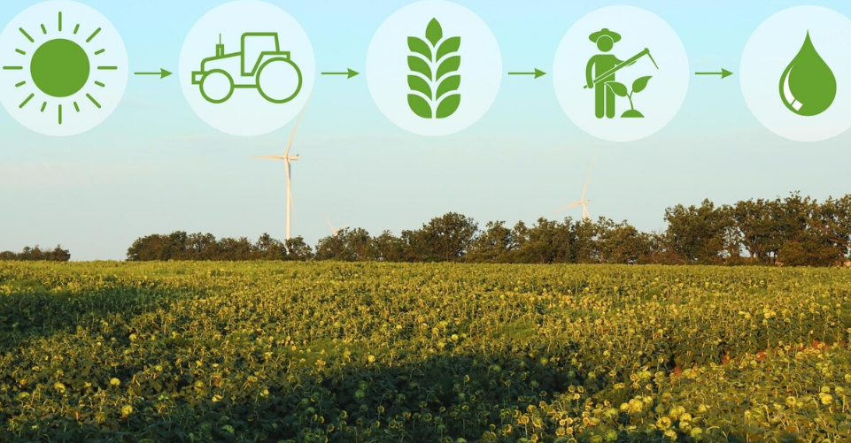

Visualizar asociaciones de ciclo
Ciclo de cultivo: Tomate - Temporada 2025
ID del ciclo: cycle2001
Novedades: Etapa actual Floración
Fecha de inicio: 10/02/202
Fecha estimada de finalización: 15/06/2025
Ubicación: Invernadero 3
Estado: HABILITADO
Descripción: Ciclo productivo del cultivo de tomate en ambiente controlado.
Datos de asociación de módulos
Cultivo asociado: Tomate
Usuario responsable: Carlos Ramírez
Sensores utilizados: Sensor de humedad 01, Sensor de temperatura 02
Insumos aplicados: Fertilizante NPK, Fungicida orgánico